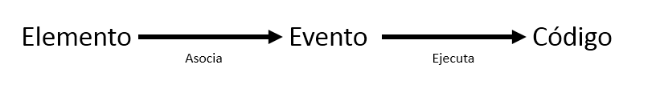

La programación dirigida por eventos es un paradigma de programación en el que tanto la estructura como la ejecución de los programas van determinados por los sucesos que ocurran en el sistema, definidos por el usuario o que ellos mismos provoquen.
Existen distintos eventos en javascript entre los cuales estan:
-
UI
- scroll
- resize
- load
- ......
-
Teclado
- keypress
- keydown
- keyup
-
Raton
- click
- dblclick
- mousedown
- .....
-
Formularios
- input
- submit
- change
- .......
-
....
Pasos para el manejo de enventos
- Seleccionar el elemento (nodo)
- Indicar el evento en el elemento seleccionado
- Escribir el codigo a ejecutar en respuesta al evento
Existen diferentes maneras de usar eventos en javascript;
- Manejadores HTML
- <elemento onevento ="codigo">
- Manejador DOM tradicional
- elemento.onevento = nombreFuncion
- Escuchador (listener) DOM nivel 2
- elemento.addEventListener('evento',nombreFuncion)